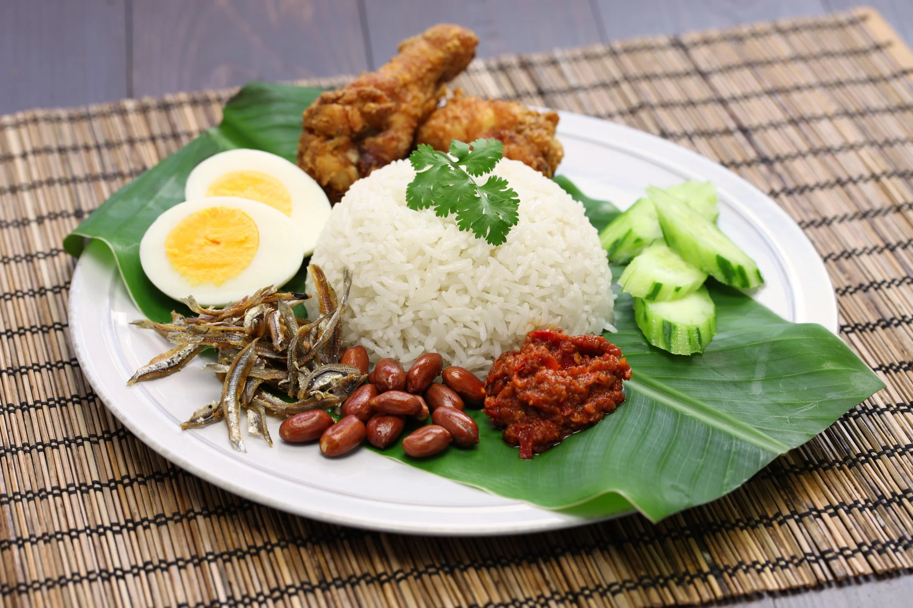

Ingredients
- 2 cups of rice
- 1 cup of coconut milk
- 1 tablespoon of sambal
- Fried crispy anchovies
- Peanuts
- 2 boiled eggs
- Salt to taste
Instructions
- Rinse the rice and soak it in water for 30 minutes.
- In a pot, combine the soaked rice, coconut milk, and salt. Cook until the rice is fluffy.
- Prepare sambal by frying it in a pan until fragrant.
- Serve the rice on a plate with sambal, crispy anchovies, peanuts, and boiled eggs.